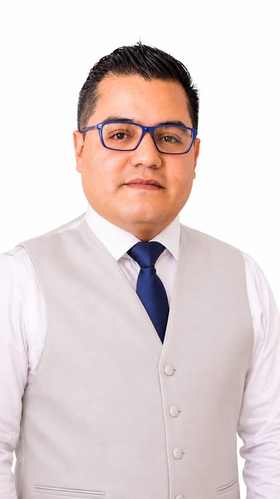

TITULAREnrique Ordóñez Blanco
Conocer más
Soy Enrique Ordóñez, cuento con más de 13 años de experiencia desempeñándome como Ejecutivo de Atención en el CAR, una labor que realizo día a día con gran dedicación y compromiso.
Disfruto ayudar a los demás, poniendo mi experiencia y conocimientos al servicio de cada persona que lo necesite. Me caracterizo por ser un profesional trabajador, responsable y altamente dedicado, enfocando siempre mi máximo esfuerzo en brindar soluciones eficaces y alcanzar los objetivos planteados.